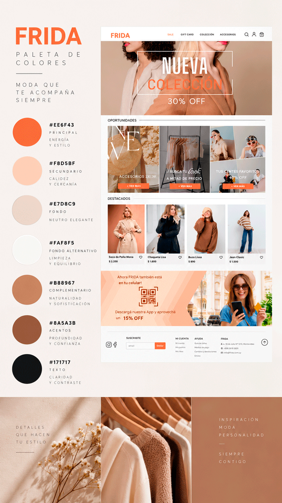
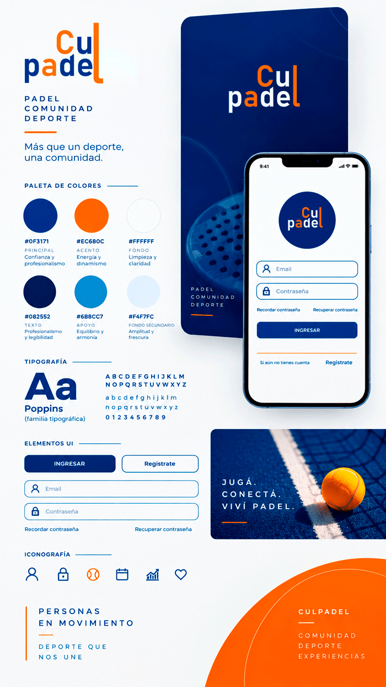
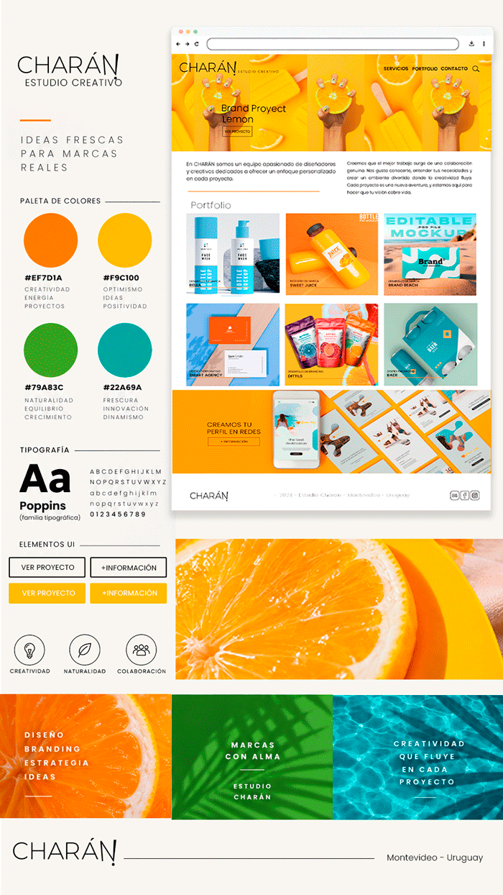
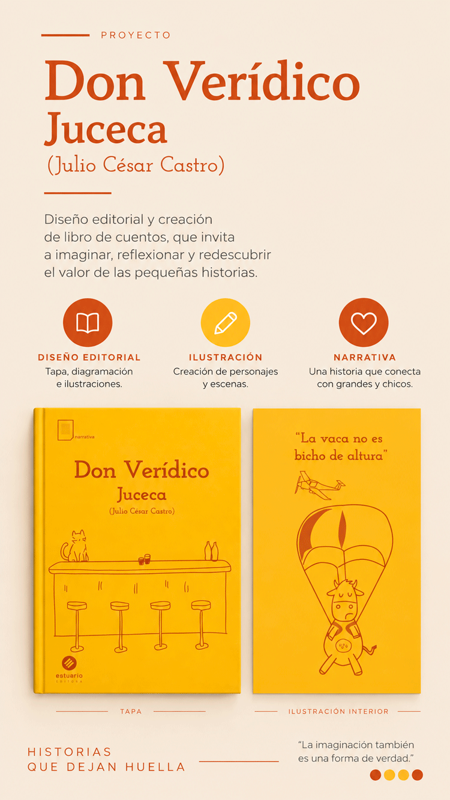
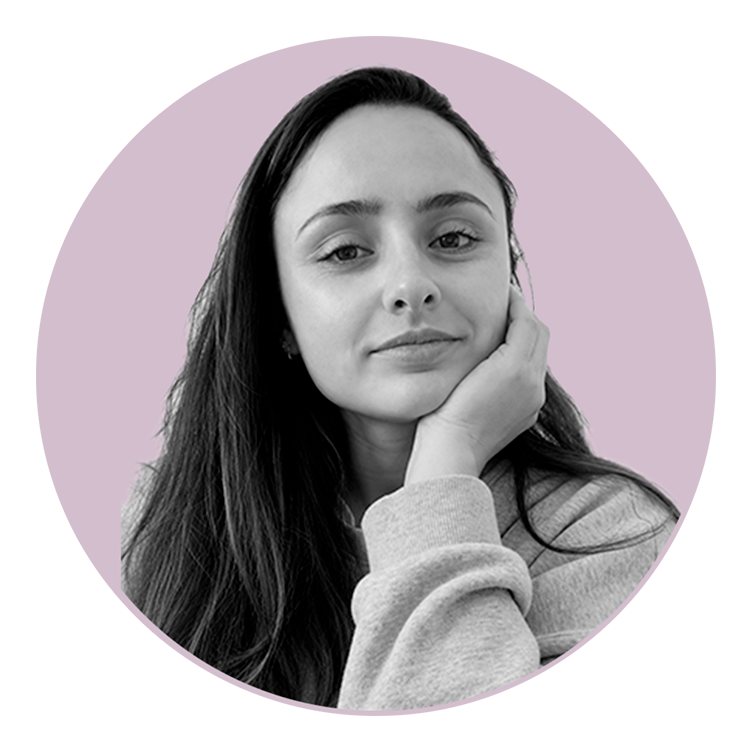

PROYECTOS DESTACADOS




Diseño editorial
Diseño editorial donde se crearon
ilustraciones, tapa, contratapa y enuadernación.
Hola, soy Rita
Diseñadora digital
con una mirada
integral.
Busco crear diseños limpios, claros y equilibrados, donde cada elemento tenga un propósito y comunique de forma directa lo que el cliente necesita. Me gusta trabajar sin excesos, priorizando lo esencial y buscando siempre un resultado visual que sea funcional y atractivo.
Hablemos